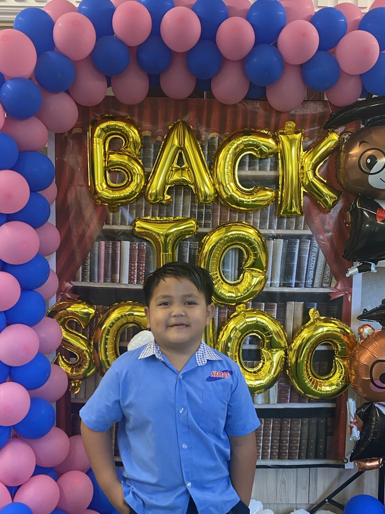
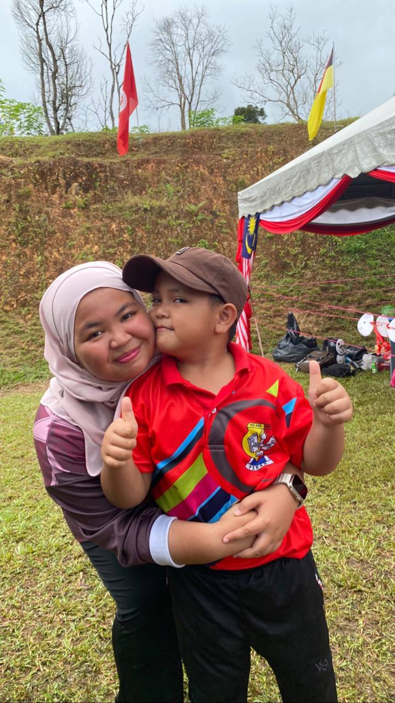
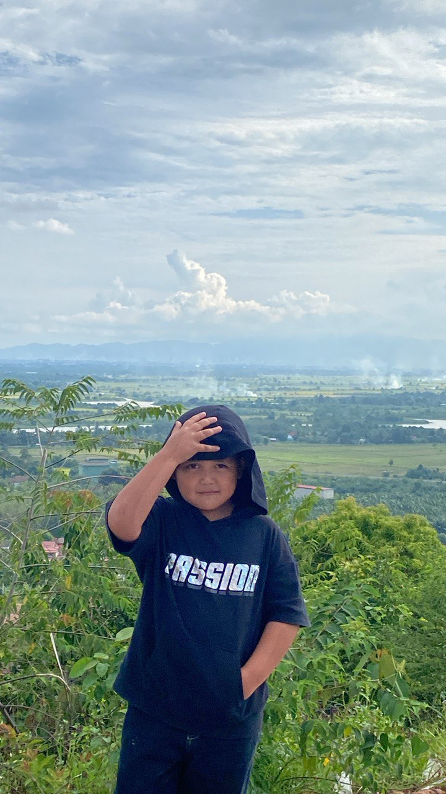

|

|

|
Adik/Baby ˶ᵔ ᵕ ᵔ˶
Iqwal, my youngest brother, is a seven-year-old whirlwind of energy and laughter. His love for boba chocolate is legendary, and his toothless grin is guaranteed to melt your heart. Though small in stature, he possesses a sharp mind and a tongue that can leave even the most seasoned debater speechless.
More than anything, Iqwal wants the best for me. He is my biggest supporter, cheering me on from the sidelines and celebrating every accomplishment. When I fall ill, he transforms into a caring nurse, checking on me constantly and offering comfort. Even when I'm at my most annoying, driving him to tears with my relentless teasing, his love remains unwavering. He insists on seeing me off whenever I leave for campus, ensuring I'm safe and sound.
Despite our occasional bickers, the bond between us is undeniable. He is my confidant, my partner in crime, and the source of endless laughter. His innocent perspective on life serves as a reminder to cherish every moment and embrace the simple joys.
Iqwal, with his boundless love and infectious enthusiasm, is a true gift. He brings sunshine into our lives and reminds us of the importance of family, love, and laughter. I am incredibly grateful to have him as my brother, and I can't wait to see what the future holds for this little ball of joy.